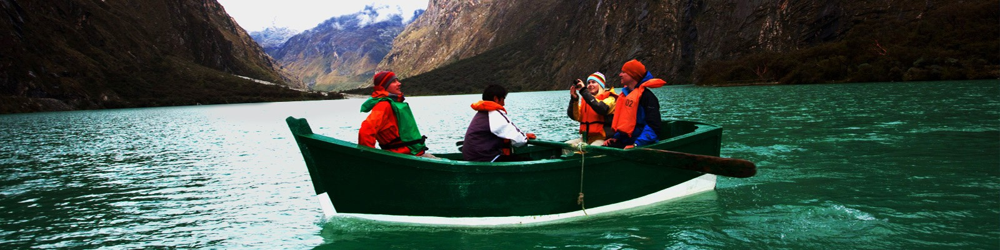
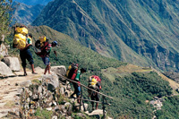
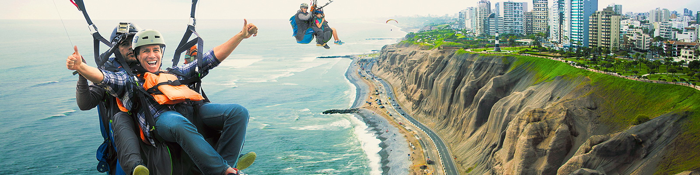

Viajar al Perú es despertar sueños pendientes , es conectarse con uno mismo, es adentrarse en 5 mil años de historia viva. Prepárate para dominar olas sobre caballitos de totora, tablas de surf y disfrutar de puestas del sol en oasis con protectoras dunas. En la sierra, con el sonido de quenas en el viento, respirarás el aire puro de los Andes y contemplarás con devoción la armonía del hombre con la naturaleza en Machu Picchu. En la selva, el río Amazonas te dará la bienvenida con delfines rosados y te invitará a bailar, a ser libre. Recorrer las regiones del Perú es disfrutar de una gastronomía mestiza, única y reconocida en el mundo. Si el corazón te dice que sí, atrévete a visitarlo.
Experiencias únicas
solo viaje no es suficiente para descubrir todas las maravillas que el Perú ofrece. Aquí destacamos solo algunos de esos lugares y experiencias mágicas que es imposible dejar de vivir y conocer en una travesía por el país.
Trekking
Practicar caminata o trekking en el Perú es trasladarse por hermosos parajes andinos con fantásticas vistas de nevados y lagunas. Es recorrer el Qhapaq Ñan, la red de caminos que unía el Imperio inca ; conocer la cultura de las comunidades; atravesar las cordilleras Blanca y Huayhuash en Áncash o encontrar más de una ruta hacia Machu Picchu en Cusco. Aquí destacamos solo algunos de esos lugares y experiencias mágicas que es imposible dejar de vivir y conocer en una travesía por el país
Solo un viaje no es suficiente para descubrir todas las maravillas que el Perú ofrece.
Kayak
En los diversos ríos de menor grado de dificultad, donde se practica también el canotaje o rafting, se puede navegar kayaks, especialmente en apacibles lagunas que encontramos en las diversas regiones del país, con adecuados servicios que permiten alquilar las embarcaciones. Se desconoce el origen exacto del kayak, pero la embarcación se emplea como medio de transporte en pueblos nórdicos. Según algunos historiadores, kayak significa "ropa para andar en el agua" u "hombre-barca", debido a la peculiaridad de la nave donde cabe una sola persona, en la gran mayoría de casos. La práctica del kayak demanda una pericia básica de control de la nave, que depende del equilibrio. Es importante dominar técnicas de natación ante cualquier percance que pueda surgir en pleno trayecto de la travesía. En Perú el kayak puede practicarse a la perfección en bahías o lagunas de la costa, sierra y selva.

Aventura terrestre
- Andinismo
- Canopy
- Escalada en Roca
- Ciclismo de Montaña
Si quieres leer las últimas noticias pincha en el periódico
